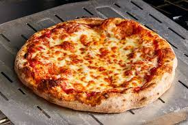

Home Page
Pizza

Homemade Pepperoni Pizza
The following recipe describes in detail how to make the perfect pizza at home using simple ingredients.
Ingredients
Sauce ingredients
- 12 oz tomato paste
- 1 tsp crushed dried oregano
- 1 tsp crushed dried basil
- 1/2 tsp garlic powder
- 1/2 tsp onion powder
- 1/2 tsp sugar
- 1/2 tsp sugar
- 1/4 tsp black pepper
Crust ingredients
- 3 1/4 cups all purpose flour, more as needed
- 2 envelopes (1/4 oz) rapid rise yeast
- 1 tablespoon sugar
- 1 1/2 tsp salt
- 1 1/3 cups very warm water
- 1/3 cup oil
Toppings
- 6 oz package pepperoni
- 1 cup shredded mozzarella, more to taste
Directions
- For sauce: Combine all sauce ingredients with 1/2 cup water in a medium bowl; set aside for flavors to
develop while making crust. Freeze remaining paste .
- For crusts: Combine 2 cups of flour with the dry yeast, sugar and salt. Add the water and oil and mix until
well blended (about 1 minute). Gradually add enough remaining flour slowly, until a soft, sticky dough ball
is formed.
- Knead for about 4 minutes, on a floured surface, until dough is smooth and elastic. Add more flour, if
needed. (If using RapidRise® Yeast, let dough rest, covered, for 10 minutes.)
- Divide dough in half. Pat each half (with floured hands) into a 12-inch greased pizza pan OR roll dough to
fit pans.
- For pizzas: Preheat oven to 425 degrees F. Top crusts with sauce, pepperoni and cheese.
- Bake for 18 to 20 minutes until crusts are browned and cheese is bubbly. For best results, rotate pizza pans
between top and bottom oven racks halfway through baking.